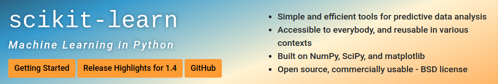

Welcome to Lab #05. This week, we'll delve into the world of Vector Space Models (VSMs) and their application within recommender engines. Recommender systems are a type of information filtering system that seeks to predict the rating or preference a user would give to an item. They are widely used in various domains, such as in suggesting movies, photos, music, books, or products to users based on their past preferences. The core idea behind these systems often involves representing items and user preferences in a vector space, where items can be recommended based on their proximity to a user's profile in this space.

Instead of building the underlying algorithms from scratch, we will utilize scikit-learn, a powerful Python library for machine learning. Scikit-learn provides simple and efficient tools for data analysis and modeling, and it is particularly adept at facilitating the development of complex algorithms through its comprehensive suite of pre-built functions and models. By leveraging scikit-learn, we can focus on the application and intricacies of VSMs in recommender systems without getting bogged down by the implementation details.
Example solutions to the DBpedia queries from last week:
1. All universities located in Canada, with their city and optionally (if it exists) their home page:
SELECT ?university ?city ?homepage WHERE {
?university a dbo:University .
?university dbo:country dbr:Canada .
?university dbo:city ?city .
OPTIONAL {?university foaf:homepage ?homepage} .
} ORDER BY ?city
This SPARQL query retrieves information about universities in Canada, specifically their names (?university), the cities they are located in (?city), and their home pages (?homepage). The query uses the dbo:University class to filter for universities, and dbo:country with dbr:Canada to specify that these universities must be located in Canada. The dbo:city predicate is used to obtain the city of each university. The OPTIONAL clause is used for the home page information, meaning that the query will return results even if the home page data is missing for some universities. This approach ensures that the lack of a home page does not exclude a university from the results. The query concludes with an ORDER BY clause to sort the results alphabetically by city, making the list easier to navigate.
2. All people who studied at Concordia University (and are listed in DBpedia), together with their description (in English):
SELECT ?name ?comment WHERE {
?cuperson dbo:almaMater dbr:Concordia_University .
?cuperson foaf:name ?name .
?cuperson rdfs:comment ?comment .
FILTER (LANG(?comment) = 'en') .
} ORDER BY ?name
This SPARQL query is designed to find individuals associated with Concordia University as their alma mater (dbr:Concordia_University). It retrieves the names (?name) and descriptions (?comment) of these individuals. The dbo:almaMater predicate filters for people connected to Concordia University, while foaf:name and rdfs:comment are used to obtain their names and descriptions, respectively. The FILTER function ensures that only English-language descriptions are selected by checking the language tag of the ?comment variable. Results are sorted alphabetically by the individual's name with the ORDER BY clause, facilitating easier review of the data.
You might be surprised that you can run these queries even without any PREFIX declarations: That's because there are a number of pre-defined prefixes in the DBpedia query interface.
As discussed with Worksheet #3, unfortunately the property dbo:city is not used consistently at the moment (this is related to the DBpedia generation process from the Wikipedia infoboxes as discussed in the last lecture, as well as the ongoing replacement of manually updated Wikipedia infoboxes with automated Wikidata queries). In practice, when querying DBpedia, make sure what you are looking for is represented consistently. In this context, Wikidata is generally more stable, as it was designed from the beginning as a knowledge base.
Here's some example code for executing SPARQL on your own Apache Fuseki server. You can play around with different SPARQL queries.
Here's an example solution (using this data) for the SPARQL with Python exercise from the previous lab. Of course, your solution might look slightly different.
If you're confused about any part of it, just ask in the Moodle Discussion forum!
Before we dive into the task, it's essential to ensure that scikit-learn, the library we'll be using, is installed in your Python environment.
Let’s first check if scikit-learn is already installed and if not, proceed with its installation:
conda activate your_environment_name python -c "import sklearn; print(sklearn.__version__)"
conda install scikit-learnWith scikit-learn installed, you're now ready to proceed with the exercise.
Let's reproduce the results from the lecture worksheet. Cosine similarity is a metric used to measure how similar two entities (in our case, movies) are irrespective of their size. This measure computes the cosine of the angle between two vectors projected in a multi-dimensional space. The movie data can be encoded (using NumPy) as:
import numpy as np movies = np.array([ [4, 8, 6, 3, 0, 0], [0, 5, 0, 8, 5, 0], [1, 4, 0, 3, 0, 10]])
NumPy is a fundamental package for scientific computing in Python, providing support for large, multi-dimensional arrays and matrices, along with a collection of mathematical functions to operate on these arrays. It serves as the foundational library upon which scikit-learn is built, enabling efficient data manipulation and storage necessary for implementing machine learning algorithms. Scikit-learn relies on NumPy for its core array data structure and computations, making NumPy an indispensable tool in the Python data science ecosystem.
Now we can use the cosine similarity implementation from scikit-learn to compute the similarity matrix:
from sklearn.metrics.pairwise import cosine_similarity similarity_scores = cosine_similarity(movies)
Print out the similarity matrix and compare it to your worksheet results. This exercise helps you understand how cosine similarity can be used to find how similar movies are to each other based on their feature vectors. You can continue computing the user/movie similarity matrix in the same style, facilitating recommendations.
After completing this task and observing the similarity matrix, you should now have a better understanding of how cosine similarity functions as a measure of similarity between vectors, representing movies in our case. This foundational concept is crucial in many areas of machine learning and data science, especially in recommender systems where we aim to suggest items that are similar to a user's past preferences.
Reflect on how changing the features of the movies (e.g., genre scores, audience ratings) might affect the cosine similarity scores. How do you think the choice of features influences the recommendations?
So that works: Now let's try this with some real data. We'll use the MovieLens datasets; for development, it's recommended to start with the small version: Download the ml-latest-small.zip dataset and uncompress it. This dataset comprises 100,000 ratings and 3,600 tag applications applied to 9,000 movies by 600 users.
To begin, load the movies.csv and tags.csv files into your program. We'll utilize Pandas for data importation, leveraging its powerful data manipulation capabilities. Pandas is an open-source data analysis and manipulation tool built on top of the Python programming language. It offers data structures and operations for manipulating numerical tables and time series, making data cleaning, analysis, and visualization easier and more intuitive (if you're new to pandas or need a quick reference, check out this handy cheatsheet from DataCamp):
import pandas as pd
movies = pd.read_csv("ml-latest-small/movies.csv", header=0)
tags = pd.read_csv("ml-latest-small/tags.csv", header=0, na_filter=False)
For efficiency and testing, consider preparing small test versions of the data files with only a few movies.
Since each tag is listed individually per movie, group all tags by movie to facilitate creating feature vectors:
groupedtags = tags.groupby(["movieId"])['tag'].apply(','.join).reset_index()
This line of Python code, utilizing the pandas library, performs several operations on the tags DataFrame, which is assumed to contain a collection of tags associated with movies:
tags.groupby(["movieId"]): This operation groups the rows of the tags DataFrame by the movieId column. It collects all rows with the same movieId into a single group, allowing for aggregate operations on each distinct movie.['tag'].apply(','.join): After grouping, this command concatenates all tag values within each group into a single string, with each tag separated by a comma. The .apply() method applies the ','.join function to combine the tags for each movie..reset_index(): This method resets the index of the resulting DataFrame to ensure it has a standard integer index starting from 0. This step is often necessary after operations like groupby() that might alter the DataFrame's index structure.The resulting variable, groupedtags, is a DataFrame where each row corresponds to a unique movieId, containing a concatenated string of all tags associated with that movie. This format simplifies the handling of movie tags by representing them as a unified entity rather than dealing with individual tags.
Now merge the grouped tag data with the movie data to enhance our feature set:
movietags = pd.merge(movies, groupedtags, on="movieId", how="inner")
This step combines the previously grouped tag data with the main movie data to enrich the dataset with tag information for each movie:
pd.merge(movies, groupedtags, on="movieId", how="inner"): This line of code uses pandas' merge function to join the movies DataFrame and the groupedtags DataFrame together. The on="movieId" parameter specifies that the merging should be based on the movieId column common to both DataFrames.how="inner" parameter dictates that the merge should be an "inner join," meaning only rows with matching movieId values in both DataFrames will be included in the resulting DataFrame. This ensures that only movies present in both datasets (i.e., those with at least one tag) are kept.The outcome, assigned to movietags, is a comprehensive DataFrame that contains all columns from both the movies and groupedtags DataFrames, aligned by their shared movieId. This enriched dataset forms the basis for feature vector creation, leveraging both movie attributes and their associated tags.
Next, create a count for each tag to form a matrix, similar to Task #1. The scikit-learn library offers a convenient tool called CountVectorizer for this purpose. CountVectorizer converts a collection of text documents into a matrix of token counts, effectively transforming our grouped tags into numerical data. This step is crucial because machine learning algorithms work with quantitative data, enabling them to detect patterns and similarities:
from sklearn.feature_extraction.text import CountVectorizer cv = CountVectorizer() count_matrix = cv.fit_transform(movietags['tag'])
Examine the count_matrix to ensure it reflects the tag distribution accurately. This matrix represents the presence (or absence) of each tag within each movie, quantifying our textual data into numerical data that can be easily analyzed.
To compute the similarity matrix, apply the same method as in the previous task:
from sklearn.metrics.pairwise import cosine_similarity similarity_scores = cosine_similarity(count_matrix)
This similarity matrix is a key component of the recommender system, enabling the identification of movies that are most similar to each other based on their associated tags.
To facilitate movie recommendations, use these helper functions to navigate between movie titles and matrix indices:
def getMovieIdx(title):
# This function receives a movie title as input and returns the
# first index where this title is found in the 'movietags' DataFrame.
return movietags.loc[movietags['title'] == title].index[0]
def getMovieTitle(id):
# This function takes an index (id) and returns the corresponding
# movie title from the 'movietags' DataFrame.
return movietags[movietags.index == id]["title"].values[0]
These functions are essential for interacting with the similarity scores matrix, allowing you to find similarities based on a movie's title or its index within the data structure.
Now you can find the similarity matrix index for a specific movie title:
movieId = getMovieIdx('Toy Story (1995)')
This line retrieves the index within the similarity matrix that corresponds to 'Toy Story (1995)', allowing us to reference its similarity scores with all other movies.
Now we can use the computed cosine similarity matrix to retrieve all movies similar to a given movieId:
similar_movies = list(enumerate(similarity_scores[movieId]))
Here, we generate a list of tuples where each tuple contains a movie's index and its similarity score to 'Toy Story (1995)', facilitating further analysis of the similarities.
You still need to sort this list (in descending order), based on the similarity score, omitting the first entry (as it will be the movie itself):
sorted_similar_movies = sorted(similar_movies, key=lambda x:x[1], reverse=True)[1:]
This exclusion is necessary because the similarity score between a movie and itself will always be the highest, making it the top result without offering any meaningful recommendation.
For the example above, this step sorts the movies by their similarity to 'Toy Story (1995)', from most to least similar, excluding 'Toy Story (1995)' itself to focus on recommendations.
You can finally make recommendations; try to display the top 5 similar movies to 'Toy Story (1995)' as recommendations. Even with the limited example dataset, this gives some workable results, like here:
Top 5 similar movies to 'Toy Story (1995)' are: 1. Bug's Life, A (1998) (0.89) 2. Toy Story 2 (1999) (0.54) 3. Guardians of the Galaxy 2 (2017) (0.45) 4. Up (2009) (0.22) 5. The Lego Movie (2014) (0.16)
This approach can be extended to compute a user/movie similarity matrix for personalized recommendations, as discussed in the lecture. Reflect on the results: How do the selected features (tags in this case) influence the recommendations? Experiment with different movies and observe how the recommendation changes.
Challenge yourself by building an intelligent movie agent, leveraging both your new recommender system and the smart university agent code from previous weeks: The movie dataset includes a links.csv file, which contains externally resolvable ids, notably the IMDBid. This ID can be used to query Wikidata for additional information on movies, such as directors, awards, and more, akin to the information available for "Toy Story" under Q171048 on Wikidata.
To begin, integrate the links.csv file into your movie recommender system to map MovieLens IDs to their corresponding IMDB IDs. Then, craft SPARQL queries to retrieve detailed information from Wikidata using these IMDB IDs. Consider fetching director names, cast members, release dates, and awards. Finally, enhance your movie recommendations by presenting this rich information alongside the recommended titles, offering a more comprehensive user experience.
This task will not only solidify your understanding of recommender systems but also deepen your skills in working with Linked Data, preparing you for the development of sophisticated, information-rich applications.
As today marks the beginning of your course project, use this time effectively to lay a solid foundation for your team. Initial steps include setting up your team dynamics, organizing your work, and planning your approach:
This kickoff meeting is crucial for establishing a strong team foundation and starting your project journey with clarity and purpose. Make the most of this session to ensure your team is aligned and ready to tackle the challenges ahead.
In this lab, you've gained hands-on experience with recommender systems, focusing on using Vector Space Models (VSMs) to craft movie recommendations. You learned to process and analyze data with pandas, compute similarity scores with scikit-learn, and apply these techniques to build a basic movie recommender system.
Theoretically, you understood how cosine similarity measures the similarity between items in a multidimensional space. Technically, you practiced data preprocessing, feature extraction, and using machine learning libraries to handle complex datasets.
Importantly, you've started to think of entities like people and movies as vectors. This concept is crucial and will reappear in your studies, especially when we explore word embeddings (word vectors) and their role in natural language processing and deep learning.
Looking forward, the concepts and skills you've acquired lay the groundwork for exploring advanced machine learning and artificial intelligence topics. Recommender systems find wide applications across e-commerce, entertainment, personalized medicine, and more. Future coursework may introduce you to scalable algorithms such as matrix factorization and deep learning methods, which are pivotal for large-scale and personalized recommendation engines.
This lab not only provided you with the tools to build simple recommender systems but also encouraged you to think about their broader impact and potential for innovation in research and real-world scenarios.
That's all for this lab!